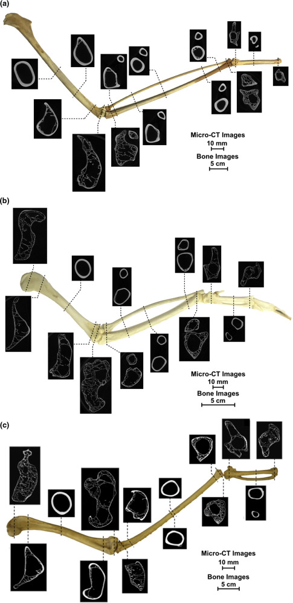
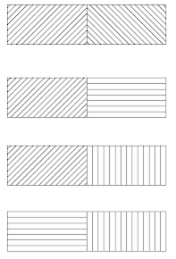
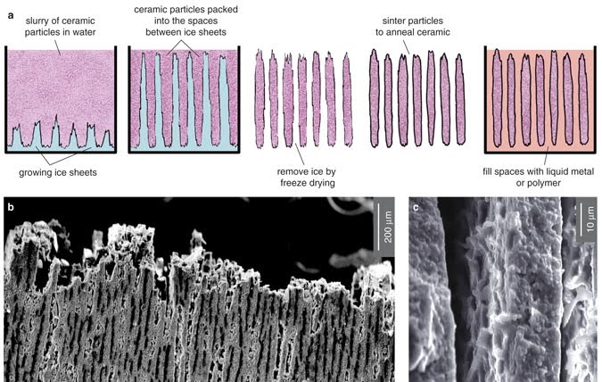

Resilient Walls
Lightweight & Load-Optimized Modular Brick Systems

The Challenge
In regions most vulnerable to climate change—particularly Small Island Developing States—the need for rapidly deployable, adaptable infrastructure is urgent. More than 60% of the population in Guyana, Tuvalu, and the Bahamas (approximately 10 million people) are exposed to 100-year flood hazards.
Traditional solutions like gabion walls are heavy, material-intensive, and difficult to transport and assemble quickly.
How might we create flood defense structures that are lightweight enough for rapid deployment, strong enough to withstand extreme conditions, and modular for adaptability and reuse?
Biological Inspiration
Bird Bones → Lightweight Strength
High internal porosity maintains strength while minimizing weight. This natural optimization informed our topology optimization approach for efficient material distribution.
Conch Shells → Fracture Resistance

Three-tiered lamellar structure deflects and dissipates cracks. This principle inspired our grain direction strategy for crack prevention.
Design Process
Step 1: Topology Optimization

Using Grasshopper's Millipede plugin, we defined variable loading conditions, generated stress line maps, and identified three density zones for brick types. The gradient output revealed natural stress lines critical to our design.
Step 2: Grain Direction Strategy
We aligned internal grain patterns with stress lines from topology optimization and alternated grain patterns in adjacent bricks to deflect crack forces. This created a natural assembly logic based on stress orientation.
Step 3: Modular System Design

We standardized brick dimensions at 1:20 scale with a uniform height of 15mm (30cm full-scale) and three lengths: 30mm, 45mm, and 65mm. Three density types were achieved through shell thickness variation.
Fabrication Process: Iteration & Problem-Solving
The Challenge
How do we control material density and grain direction simultaneously in 3D printed bricks?
Initial Approach

Problem: We varied infill density (10%, 30%, 80%), but internal infill patterns created conflicting grain artifacts that overrode our intended grain direction.
Solution

Success: We reduced infill to 0% and achieved differentiation through shell thickness only. Each brick was spatially oriented to align with intended grain direction.
Through iterative testing, we calibrated optimal parameters for support density and extrusion temperature, resulting in clear PLA prototypes at 1:20 scale with clean grain expression and no artifacts.
Assembly System

The gradient map from Millipede acts as assembly instructions. Each brick is placed based on stress line orientation in the layer below, with grain direction alternating to prevent crack propagation. The modular sizing allows for adaptive reuse and reconfiguration.

Future Development
Material Innovation

We're exploring bio-based filaments (wood-based, biocomposite) to reduce microplastic spread in water sources and enable end-of-life compostability.
Low-Tech Alternatives
For regions without 3D printing access, we're investigating rammed earth fabrication that maintains grain direction principles while enabling community-based construction methods.
Advanced Joinery
Inspired by prismatic shell structures, we envision micro-textured friction-based connections that enhance load-bearing capacity without compromising assembly ease.
Structural Validation
Future work includes horizontal and lateral force testing for flood conditions, site-specific loading simulations, and validation across real-world environmental scenarios.
Scaling Challenges
Moving from prototype (1:20 scale) to full-scale bricks (15 x 15 x 30 cm) requires research into advanced manufacturing processes to maintain detail resolution and fabrication speed.
Impact & Reflection
What This Project Demonstrates: Biomimetic design can address real-world climate challenges. Topology optimization enables material efficiency at scale. Additive manufacturing allows precise control of structural properties. Modular systems support adaptability and disaster response.
Key Learnings: Iterative fabrication testing is critical for translating digital optimization to physical reality. Material constraints drive design innovation. Computational design must consider both performance and deployability.
Applications Beyond Disaster Response: This approach could be applied to temporary infrastructure, adaptive architecture, and sustainable construction in resource-limited contexts.